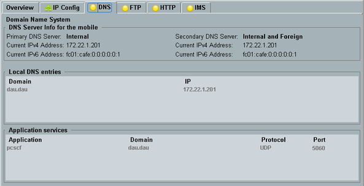
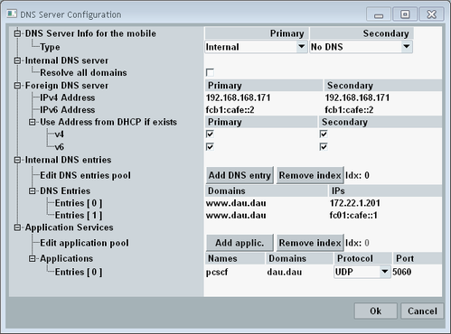
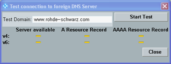

This tab specifies the primary and secondary DNS server addresses to be sent to the DUT. It also configures and controls the local DNS server of the DAU.
- DNS queries from a DUT to a foreign/external DNS server are forwarded by the DAU like any other IP packets with a foreign destination address. The DAU does not recognize them as DNS queries.
- DNS queries addressed to the DAU are handled by the local DNS server of the DAU. Optionally, the DAU can forward a query to a foreign DNS server if the local DNS server database does not contain a matching entry.
DNS queries of type A, AAAA and SRV are supported. The DAU measurement "DNS Requests" allows you to monitor all DNS queries addressed to the DAU, see "DNS Requests Tab".
The DNS tab displays a summary of the DAU settings related to the DNS service.

To open the configuration dialog, press the "Config" hotkey.

The settings are described below.
The "Type" determines which addresses are sent to the DUT as primary and secondary DNS server address and how a DNS query addressed to the DAU is handled.
Note that a foreign DNS server cannot be used with a standalone setup.
- "No DNS"
No DNS server address is sent to the DUT. - "Internal"
The address of the DAU is sent to the DUT as DNS server address.
DNS queries addressed to the DAU are handled by the local DNS server of the DAU. The foreign DNS server settings are ignored.
If the local DNS server is not running, a DNS query fails. - "Internal and Foreign"
The address of the DAU is sent to the DUT as DNS server address.
DNS queries addressed to the DAU are handled by the local DNS server. If the local DNS server database does not contain a matching entry, the query is forwarded to the configured foreign DNS server.
If the local DNS server is not running, the foreign DNS server settings are ignored and a DNS query fails. - "Foreign"
The configured foreign DNS server address is sent to the DUT.
The state and database of the local DNS server are irrelevant.
The "DNS Server Info for the mobile" at the top of the DNS tab indicates which of the listed types is active and which addresses are sent to the DUT.
- The current IP address of the DAU, providing access to the local DNS server
- The statically configured foreign DNS server address
- A foreign DNS server address received via DHCP, overriding the configured address
The DAU sends DNS server addresses to the DUT via a signaling message, for example via an ACTIVATE PDP CONTEXT ACCEPT message.
Remote command:"Resolve All Domains" ensures that all DNS queries of type A or AAAA are answered with an IP address. If the checkbox is enabled and no database entry matching a query is found, the DAU IP address is returned.
Remote command:Specifies the IPv4 and IPv6 addresses of the foreign primary and secondary DNS servers.
If a DNS server address is received via DHCP, it can either be ignored or used instead of the statically configured address. The behavior is configurable separately for all four addresses.
Remote command:Configures local DNS server database entries assigning an IPv4 or IPv6 address to a domain. The resulting DNS records are of type A for IPv4 and of type AAAA (quad-A) for IPv6.
Each entry consists of a domain and one IP address. To assign both an IPv4 and an IPv6 address to the same domain, create two entries.
A DNS query contains the domain. The answer of the DNS server contains all IPv4 addresses or all IPv6 addresses assigned to the domain.
- Edit existing entries directly in the dialog.
- To add an entry to the end of the list, press the "Add DNS entry" button, then edit the new entry.
- To delete a specific entry, select the number of the entry via parameter "Idx:" and press the "Remove index" button.
Configures local DNS server database entries assigning a host to a particular service. The resulting DNS records are of type SRV (see RFC 2782).
Each entry consists of the service, the domain supporting the service, the protocol (UDP or TCP) and the port used for the service.
A type SRV DNS query contains the service and the protocol. The answer of the DNS server contains all domain/port combinations supporting the service via the requested protocol.
- Edit existing entries directly in the dialog.
- To add an entry to the end of the list, press the "Add applic." button, then edit the new entry.
- To delete a specific entry, select the number of the entry via parameter "Idx:" and press the "Remove index" button.
The softkey opens a dialog that allows to test whether the primary foreign DNS server is reachable and whether it returns IP addresses for a specific domain.

The test uses the primary DNS server addresses resulting from section "Foreign DNS server" (statically defined addresses or DHCP override values).
To perform a test, enter the domain to be resolved and press the "Start Test" button.
During a test, the DAU sends a ping request to the IPv4 and IPv6 addresses of the foreign DNS server to test whether it is reachable. The result is displayed in the dialog in column "Server available".
If the server is reachable, the DAU sends four DNS queries to the foreign DNS server: type A and type AAAA queries to the IPv4 and IPv6 addresses. The results are shown in the dialog. The "A/AAAA Resource Record" columns indicate whether the server has returned an IP address (yellow dash = no result, red cross = failure, green checkmark = success).
Remote command:Start or stop the internal DNS server using the [ON | OFF] key. Alternatively, right-click the "Local DNS Server" softkey.
The softkey shows the current state.
Remote command: